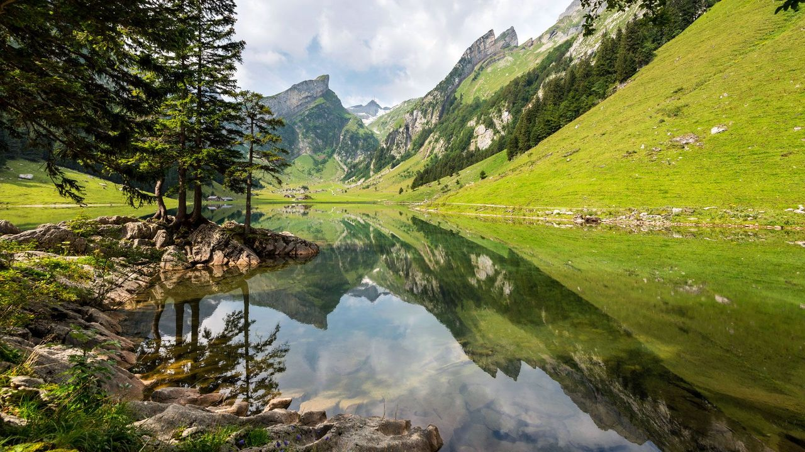
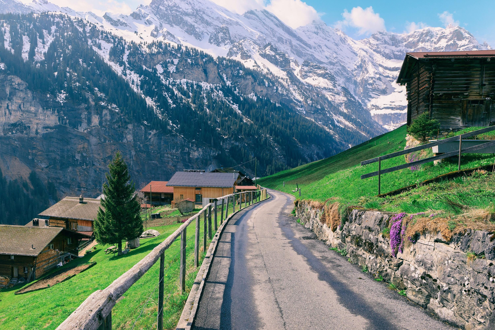
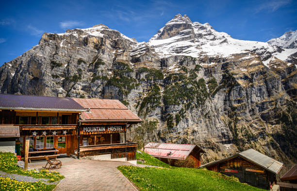

Hidden Gems of Switzerland


Appenzell


Switzerland is a landlocked country located in Central Europe, bordered by France, Germany, Italy, Austria, and Liechtenstein. It's known for its stunning landscapes, including the Swiss Alps, beautiful lakes, and picturesque valleys.
Switzerland has a rich cultural heritage influenced by its multilingual population. The country has four official languages: German, French, Italian, and Romansh. Each region has its own unique customs, traditions, and culinary specialties.
Switzerland boasts one of the highest per capita incomes in the world and is known for its robust economy, driven by finance, pharmaceuticals, machinery, and tourism. Major cities like Zurich and Geneva are global financial hubs.
Swiss dining customs are generally informal. Tipping is appreciated but not mandatory; rounding up the bill or leaving small change is common.